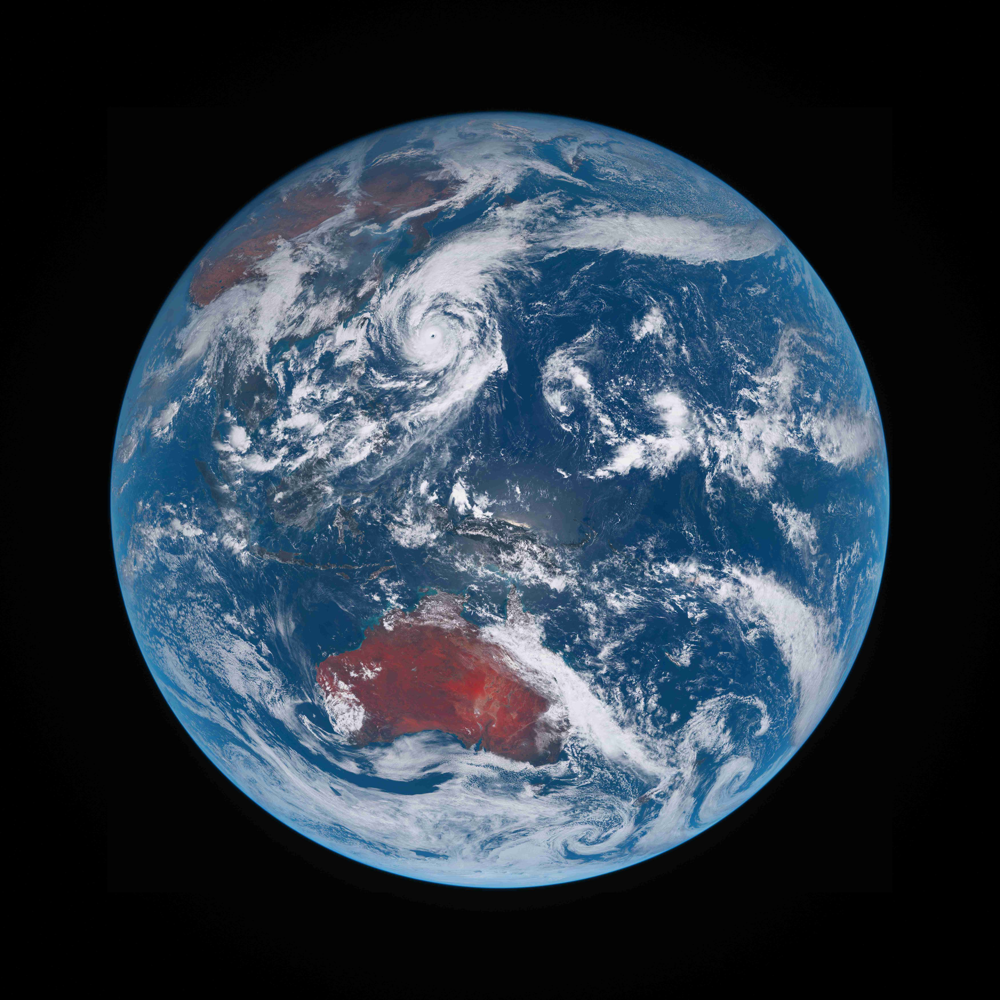
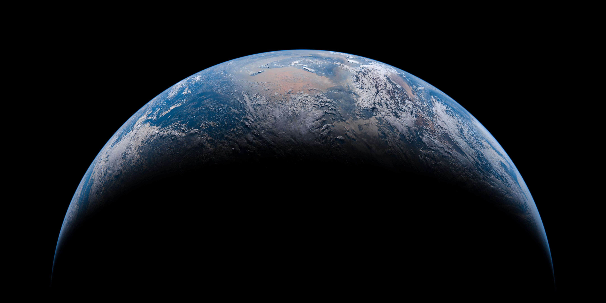
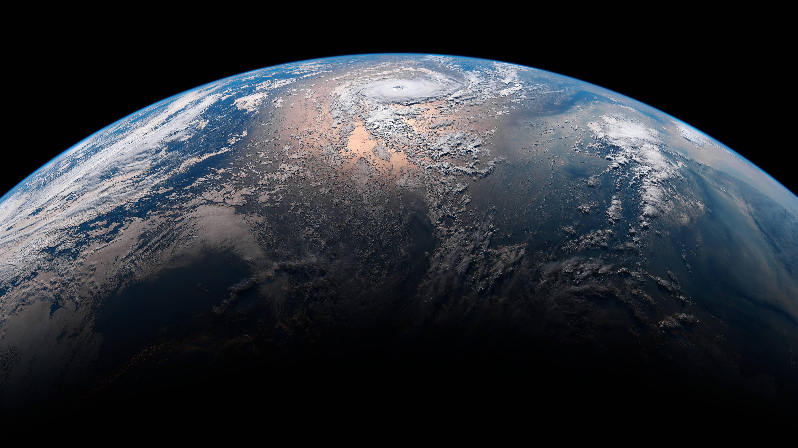
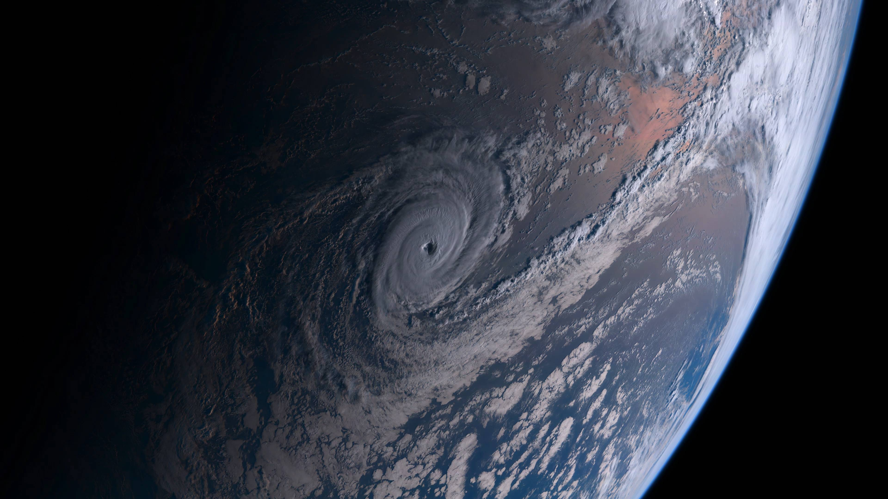
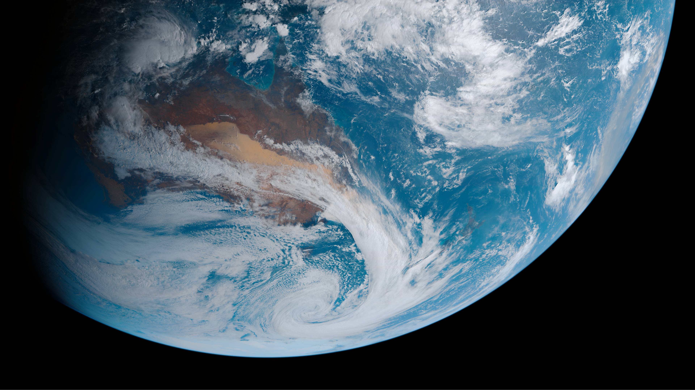
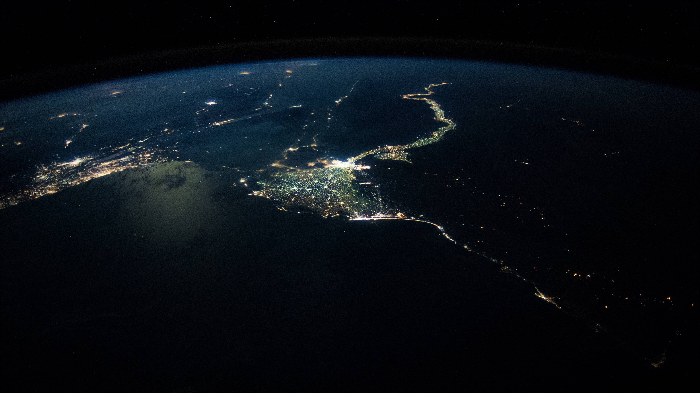

<h1 style="text-align: center; padding-top: 2rem;" id="top" class="l-heading">Earth Gallery</h1>

<div class="GalleryWrapEarth gridprops">
    <div style="grid-area: img1;">
        
    </div>
    <div style="grid-area: img2;">
        
    </div>
    <div style="grid-area: img3;">
        
    </div>
    <div style="grid-area: img4;">
        
    </div>
    <div style="grid-area: img5;">
        
    </div>
    <div style="grid-area: img6;">
        
    </div>
    <div style="grid-area: img7;">
        <video style="width: 100%; height: 100%;" muted controls
            src="https://github.com/98mohitkumar/solar-system/raw/master/Resources/Himawari%203D%20globe.mp4"></video>
    </div>
    <div style="grid-area: img8;">
        
    </div>
    <div style="grid-area: img9;">
        
    </div>
    <div style="grid-area: img10;">
        <video style="width: 100%; height: 100%; object-fit: contain;" muted controls
            src="https://github.com/98mohitkumar/solar-system/raw/master/Resources/Earth%20-%20Solar%20Eclipse.mp4"></video>
    </div>
    <div style="grid-area: img11;">
        
    </div>
    <div style="grid-area: img12;">
        <video style="width: 100%; height: 100%; object-fit: cover;" muted controls
            src="https://github.com/98mohitkumar/solar-system/raw/master/Resources/Super%20Typhoon%20Atsani.mp4"></video>
    </div>
    <div style="grid-area: img13;">
        
    </div>
    <div style="grid-area: img14;">
        
    </div>
</div>
